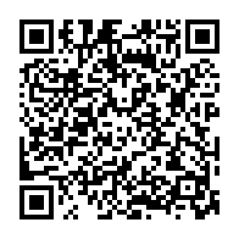

電話
参拝時間や当日の予定など、確実な確認が必要な場合はお電話でお問い合わせください。
078-861-4144
電話をかける電話・メール・アクセスの3つから、ご都合のよい方法をご利用ください。

妙本寺は神戸市灘区原田通3丁目1-1にあります。JR灘駅北口、阪急王子公園駅から徒歩約5分です。
先祖供養、塔婆、法事、葬儀について、妙本寺住職および信徒がお話を伺います。宗教上の儀式・法要については住職の指導に沿ってご案内します。
当日の予定や、参詣前に確認しておきたいこと。
年間行事や法話会の開催日、参加についての確認。
何をすればよいか分からない段階からご相談いただけます。宗教上の儀式・法要の最終的なご案内は住職が行います。

寺報・行事案内・掲示物などでは、このQRコードから今月の行事や初めての方へのご案内をご覧いただけます。